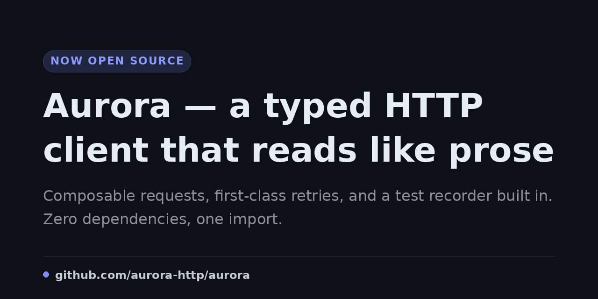
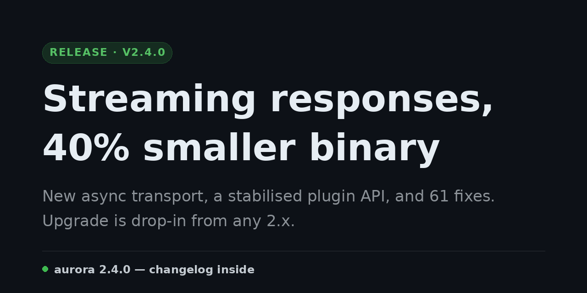
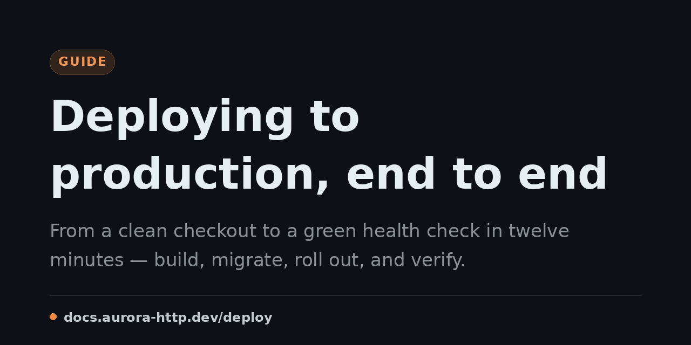

Tool
social-card
Renders a shippable 1280×640 social / Open Graph preview card from a small JSON spec.
Render a polished 1280x640 social / Open Graph preview card — an eyebrow kicker, a large wrapping title, a muted subtitle, an accent rule, and a footer wordmark — from a small JSON spec. Reach for this whenever a task produces something worth sharing (a repo or product launch, a release, a docs or guide page) and the natural artifact is a share image rather than a described one. Never a slash command; the crew reach for it implicitly when the intent of a prompt calls for one.
What it does
social-card turns a small JSON spec — an eyebrow kicker, a title, a subtitle, an accent colour, and a footer wordmark — into a polished 1280×640 PNG, the standard Open Graph aspect that Slack, Discord, Twitter, LinkedIn, and iMessage crop from a shared link. It is a self-contained Python renderer that provisions its one dependency (Pillow) itself the first time it runs, so a run produces the card deterministically on a deep, tasteful dark canvas — nothing to install, no design app to open.
It is a tool, not a command: you never type it. The crew reach for it on their own when the natural artifact of a task is a share image — a repo or product launch, a release, a docs or guide page — instead of a described one. Long titles wrap and the type auto-fits, so copy of any length stays inside the frame.
Examples
A few things social-card can produce, each from a small spec of its own.



How the crew reach for it
Tools are opt-in. Add it at install time with shipmates install --harness <name> --with-tools social-card, or omit the flag and pick it from the interactive list. Once installed it sits alongside the crew as a capability they invoke implicitly; there is no slash command to type.
The renderer and its instructions are bundled together, so wherever the tool lands the agent has both the social_card.py script and the spec format it needs to drive it — python3 social_card.py --spec spec.json --out card.png.
Reference
- Name
social-card- Description
- Render a polished 1280x640 social / Open Graph preview card — an eyebrow kicker, a large wrapping title, a muted subtitle, an accent rule, and a footer wordmark — from a small JSON spec. Reach for this whenever a task produces something worth sharing (a repo or product launch, a release, a docs or guide page) and the natural artifact is a share image rather than a described one. Never a slash command; the crew reach for it implicitly when the intent of a prompt calls for one.
- Bundled files
social_card.py- Install
shipmates install --harness <name> --with-tools social-card
Where this lives
This page is generated from toolbox/social-card/tool.md. Opt in at install with --with-tools social-card and the installer copies the tool — instructions and bundled files — into the harness's skills tree.